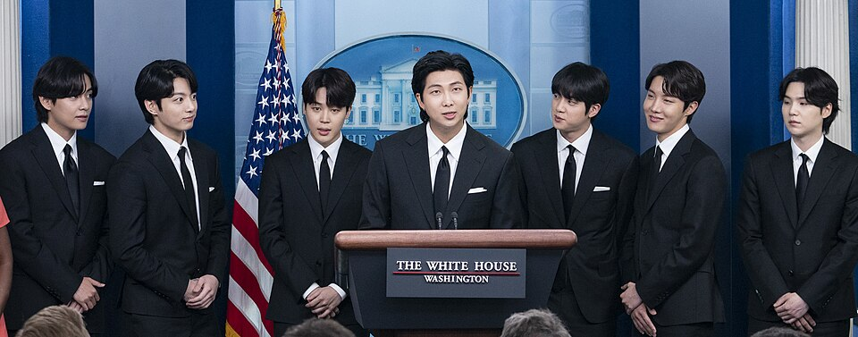

BTS — Pop & Hip-Hop Réflexif
Portés par une narration introspective abordant santé mentale, pressions de la jeunesse et quête d'émancipation, les sept membres de BTS ont redéfini l'impact global de la culture sud-coréenne.

La Rupture Thématique : La Santé Mentale au Cœur de la Pop
Avant BTS, l'industrie de la 2e génération se concentrait majoritairement sur les thèmes d'amour idyllique, de rupture romantique ou de fêtes énergiques. À partir de 2015 avec l'ère The Most Beautiful Moment in Life (HYYH), BTS introduit une écriture viscérale axée sur l'anxiété scolaire, les désillusions de la vingtaine et la pression sociale sud-coréenne.
En co-écrivant leurs propres paroles (notamment la rap-line composée de RM, SUGA et j-hope), le groupe instaure une authenticité inédite qui séduit massivement un public mondial en quête d'identification réelle.
🌐 Redéfinition de l'Industrie Musicale Mondiale
- Pénétration du marché américain : Premier groupe coréen à atteindre le sommet du Billboard 200 et du Hot 100 avec des titres coréens (Life Goes On) et anglais (Dynamite, Butter).
- Discours aux Nations Unies (ONU) : Campagne Love Myself avec l'UNICEF, élevant le groupe au rang de diplomates culturels mondiaux.
- Création du modèle Weverse : Anticipation des réseaux communautaires propriétaires, remplaçant les intermédiaires traditionnels par un lien direct fan-artiste.
Donnez votre avis sur BTS dans le débat
Considérez-vous que BTS est le point d'inflexion majeur de l'histoire de la K-Pop ?